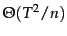
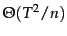
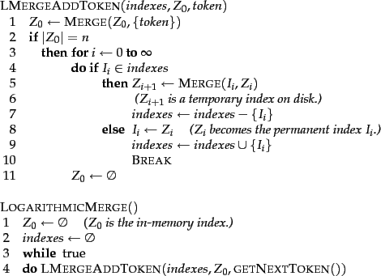
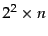
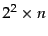
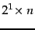
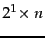
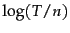
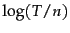

Thus far, we have assumed that the document collection is static. This is fine for collections that change infrequently or never (e.g., the Bible or Shakespeare). But most collections are modified frequently with documents being added, deleted, and updated. This means that new terms need to be added to the dictionary, and postings lists need to be updated for existing terms.
The simplest way to achieve this is to periodically reconstruct the index from scratch. This is a good solution if the number of changes over time is small and a delay in making new documents searchable is acceptable - and if enough resources are available to construct a new index while the old one is still available for querying.
If there is a requirement that new documents be included quickly, one solution is to maintain two indexes: a large main index and a small auxiliary index that stores new documents. The auxiliary index is kept in memory. Searches are run across both indexes and results merged. Deletions are stored in an invalidation bit vector. We can then filter out deleted documents before returning the search result. Documents are updated by deleting and reinserting them.
Each time the auxiliary index becomes too large, we merge it into the main index. The cost of this merging operation depends on how we store the index in the file system. If we store each postings list as a separate file, then the merge simply consists of extending each postings list of the main index by the corresponding postings list of the auxiliary index. In this scheme, the reason for keeping the auxiliary index is to reduce the number of disk seeks required over time. Updating each document separately requires up to  disk seeks, where
disk seeks, where  is the average size of the vocabulary of documents in the collection. With an auxiliary index, we only put additional load on the disk when we merge auxiliary and main indexes.
is the average size of the vocabulary of documents in the collection. With an auxiliary index, we only put additional load on the disk when we merge auxiliary and main indexes.
Unfortunately, the one-file-per-postings-list scheme is infeasible because most file systems cannot efficiently handle very large numbers of files. The simplest alternative is to store the index as one large file, that is, as a concatenation of all postings lists. In reality, we often choose a compromise between the two extremes (Section 4.7 ). To simplify the discussion, we choose the simple option of storing the index as one large file here.
In this scheme, we process each posting
 times because we touch it during each of
times because we touch it during each of
 merges where is the size of the auxiliary index and
merges where is the size of the auxiliary index and  the total number of postings. Thus, the overall time complexity is . (We neglect the representation of terms here and consider only the docIDs. For the purpose of time complexity, a postings list is simply a list of docIDs.)
the total number of postings. Thus, the overall time complexity is . (We neglect the representation of terms here and consider only the docIDs. For the purpose of time complexity, a postings list is simply a list of docIDs.)
|  |
We can do better than by introducing  indexes
indexes  ,
,  ,
,  , ...of size
, ...of size  ,
,  ,  .... Postings percolate up this sequence of indexes and are processed only once on each level. This scheme is called logarithmic merging (Figure 4.7 ). As before, up to postings are accumulated in an in-memory auxiliary index, which we call
,  .... Postings percolate up this sequence of indexes and are processed only once on each level. This scheme is called logarithmic merging (Figure 4.7 ). As before, up to postings are accumulated in an in-memory auxiliary index, which we call  . When the limit is reached, the
. When the limit is reached, the  postings in
postings in  are transferred to a new index
are transferred to a new index  that is created on disk. The next time
that is created on disk. The next time  is full, it is merged with
is full, it is merged with  to create an index
to create an index  of size
. Then
of size
. Then  is either stored as
is either stored as  (if there isn't already an
(if there isn't already an  ) or merged with
) or merged with  into
into  (if
(if  exists); and so on. We service search requests by querying in-memory
exists); and so on. We service search requests by querying in-memory  and all currently valid indexes
and all currently valid indexes  on disk and merging the results. Readers familiar with the binomial heap data structure
on disk and merging the results. Readers familiar with the binomial heap data structure will recognize its similarity with the structure of the inverted indexes in logarithmic merging.
will recognize its similarity with the structure of the inverted indexes in logarithmic merging.
Overall index construction time is
 because each posting is processed only once on each of the  levels. We trade this efficiency gain for a slow down of query processing; we now need to merge results from indexes as opposed to just two (the main and auxiliary indexes). As in the auxiliary index scheme, we still need to merge very large indexes occasionally (which slows down the search system during the merge), but this happens less frequently and the indexes involved in a merge on average are smaller.
because each posting is processed only once on each of the  levels. We trade this efficiency gain for a slow down of query processing; we now need to merge results from indexes as opposed to just two (the main and auxiliary indexes). As in the auxiliary index scheme, we still need to merge very large indexes occasionally (which slows down the search system during the merge), but this happens less frequently and the indexes involved in a merge on average are smaller.
Having multiple indexes complicates the maintenance of collection-wide statistics. For example, it affects the spelling correction algorithm in Section 3.3 (page  ) that selects the corrected alternative with the most hits. With multiple indexes and an invalidation bit vector, the correct number of hits for a term is no longer a simple lookup. In fact, all aspects of an IR system - index maintenance, query processing, distribution, and so on - are more complex in logarithmic merging.
) that selects the corrected alternative with the most hits. With multiple indexes and an invalidation bit vector, the correct number of hits for a term is no longer a simple lookup. In fact, all aspects of an IR system - index maintenance, query processing, distribution, and so on - are more complex in logarithmic merging.
Because of this complexity of dynamic indexing, some large search engines adopt a reconstruction-from-scratch strategy. They do not construct indexes dynamically. Instead, a new index is built from scratch periodically. Query processing is then switched from the new index and the old index is deleted.
Exercises.
2 0 0 0 0 4 0 0 0 1 6 0 0 1 0